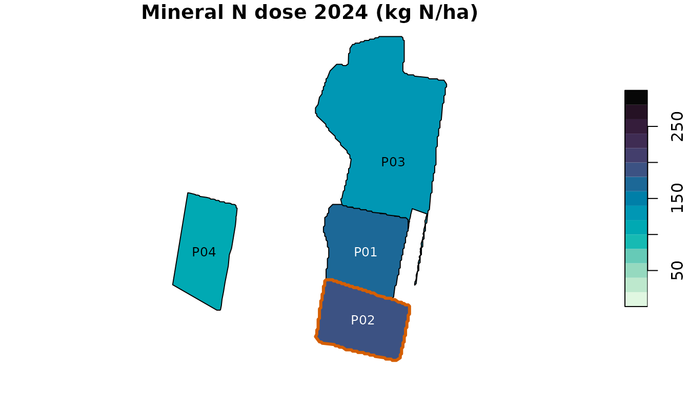
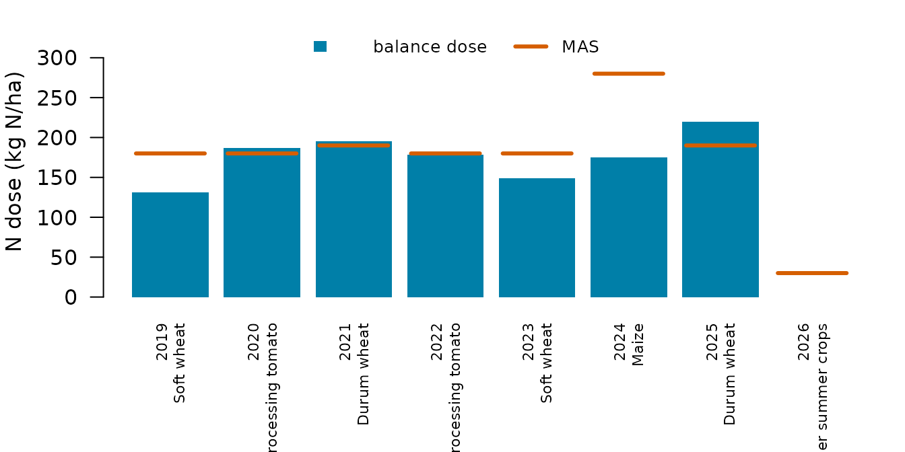
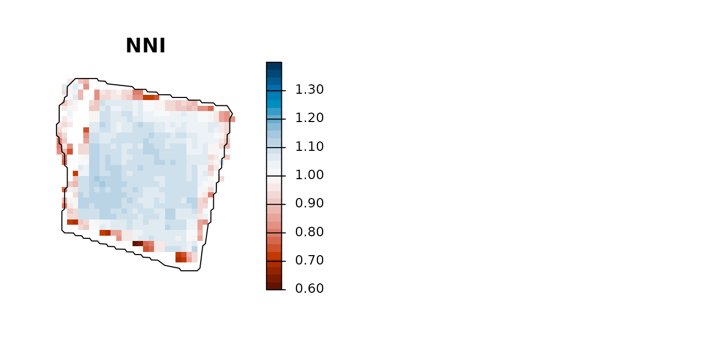
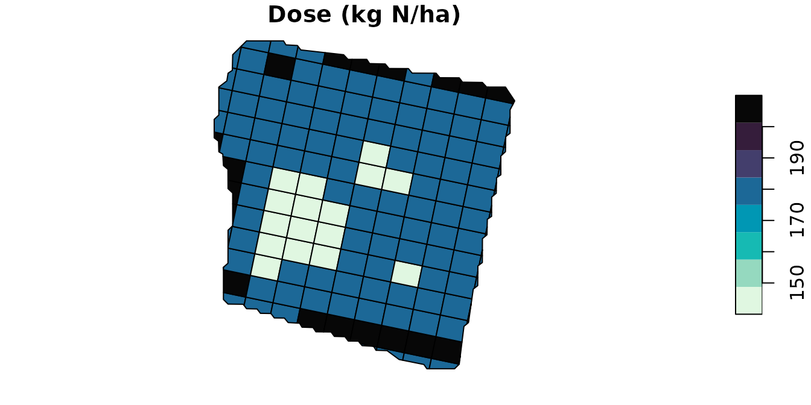

Farm-level balance and strip-prescription map
Source:vignettes/farm-and-prescription-map.Rmd
farm-and-prescription-map.RmdThis vignette follows the workflow of the agrinutri article on a real farm of the Po plain near Piacenza (Italy):
- Load a farm layer whose columns carry the balance inputs.
- Run the N, P2O5 and K2O balances on
every plot with
farm_balance(). - Follow one plot through eight years of rotation.
- Turn a Sentinel-2 scene into a strip prescription for that plot.
- Export it for the on-board monitor.
1. The farm
piacenza_farm.geojson holds four neighbouring fields
delineated from Sentinel-2 (46.7 ha), one for each crop of 2024. The
crop of every year from 2019 to 2026 was estimated from satellite data;
soil values are field means of the regional soil maps; rainfall comes
from ERA5 and yields from the provincial statistics.
library(agrinutri)
library(sf)
farm <- sf::st_read(system.file("extdata/piacenza_farm.geojson", package = "agrinutri"),
quiet = TRUE)
sf::st_drop_geometry(farm)[, c("plot", "area_ha", "c2023", "c2024", "clay", "olsen_value", "k_value")]
#> plot area_ha c2023 c2024 clay olsen_value k_value
#> 1 P01 8.612 Soft wheat Maize 19.399 17.025 88.375
#> 2 P02 7.565 Durum wheat Processing tomato 20.776 18.844 99.669
#> 3 P03 23.148 Processing tomato Soft wheat 17.342 18.960 84.855
#> 4 P04 7.403 Processing tomato Durum wheat 16.949 18.280 78.6532. Balances for every plot
farm_balance() applies N_balance() to every
feature and appends N_target, MAS_cap,
MAS_ok and N_total_kg. With
p_balance and k_balance it also runs the
P2O5 and K2O balances from the columns
olsen_value/olsen_unit and
k_value/k_unit (here Olsen P and exchangeable
K as elements, mg/kg).
out <- farm_balance(farm, p_balance = TRUE, k_balance = TRUE)
sf::st_drop_geometry(out)[, c("plot", "crop", "N_target", "MAS_cap", "MAS_ok",
"N_total_kg", "P2O5_target", "K2O_target")]
#> plot crop N_target MAS_cap MAS_ok N_total_kg
#> 1 P01 Grain maize 500-700 (grain) 175.0 280 TRUE 1507.1
#> 2 P02 Processing tomato (medium yield) 193.1 180 FALSE 1460.8
#> 3 P03 Soft wheat FP/FPS (grain) 133.6 180 TRUE 3092.6
#> 4 P04 Durum wheat (grain) 105.4 190 TRUE 780.3
#> P2O5_target K2O_target
#> 1 50.9 121.5
#> 2 91.0 281.1
#> 3 41.3 139.5
#> 4 35.0 174.7The processing tomato exceeds its maximum allowed dose (MAS) and is flagged. The standard-dose scheme of the guidelines gives one value per crop instead:
vapply(out$crop, function(cr) dose_standard_N(cr)$dose_final, numeric(1))
#> Grain maize 500-700 (grain) Processing tomato (medium yield)
#> 240 130
#> Soft wheat FP/FPS (grain) Durum wheat (grain)
#> 155 160
plot(out["N_target"], main = "Mineral N dose 2024 (kg N/ha)", breaks = seq(0, 300, 20),
pal = function(n) hcl.colors(n, "Mako", rev = TRUE), key.pos = 4, reset = FALSE)
plot(sf::st_geometry(out[!out$MAS_ok, ]), border = "#D55E00", lwd = 3, add = TRUE)
text(sf::st_coordinates(sf::st_point_on_surface(sf::st_geometry(out))), labels = out$plot,
cex = 0.8, col = ifelse(out$N_target > 150, "white", "black"))
3. One plot through the rotation
Because the inputs are columns, the balance runs over years as easily
as over plots. piacenza_p01_rotation.csv holds the yearly
inputs of plot P01; the soil is the same every year.
rot <- read.csv(system.file("extdata/piacenza_p01_rotation.csv", package = "agrinutri"))
p1 <- farm[farm$plot == "P01", ]
yr <- do.call(rbind, lapply(seq_len(nrow(rot)), function(i) {
r <- rot[i, ]
b <- N_balance(expected_yield_tons_ha = r$expected_yield_tons_ha, crop = r$crop, ccp = r$ccp,
sand = p1$sand, clay = p1$clay, Ntot = p1$Ntot, SOM = p1$SOM, CN = p1$CN,
oxygen_availability = "Normal", winter_rain = r$winter_rain,
start_spring_rain = r$start_spring_rain, prev_crop = r$prev_crop,
source = "None", fertorg_frequency = "every year",
location = p1$location, forg_quantity = 0)
data.frame(year = r$year, crop = r$crop_class,
N = round(calculate_N_fertilization(b), 1),
MAS = get_MAS(r$crop)$mas_N,
P2O5 = round(P_balance(r$expected_yield_tons_ha, r$crop, olsen_value = p1$olsen_value,
olsen_unit = "P", clay = p1$clay, sand = p1$sand)$P2O5_required, 1),
K2O = round(K_balance(r$expected_yield_tons_ha, r$crop, k_value = p1$k_value,
k_unit = "K", clay = p1$clay, sand = p1$sand)$K2O_required, 1))
}))
yr
#> year crop N MAS P2O5 K2O
#> 1 2019 Soft wheat 131.2 180 38.8 118.3
#> 2 2020 Processing tomato 187.0 180 91.0 300.0
#> 3 2021 Durum wheat 195.2 190 59.7 134.8
#> 4 2022 Processing tomato 178.8 180 91.0 300.0
#> 5 2023 Soft wheat 149.0 180 50.5 125.8
#> 6 2024 Maize 174.9 280 50.9 121.4
#> 7 2025 Durum wheat 219.5 190 47.6 126.4
#> 8 2026 Other summer crops 0.0 30 47.6 163.8
par(mar = c(6, 4, 1, 1))
bp <- barplot(yr$N, names.arg = paste(yr$year, yr$crop, sep = "\n"), las = 2, cex.names = 0.7,
col = hcl.colors(3, "Mako")[2], border = NA, ylim = c(0, 340),
ylab = "N dose (kg N/ha)")
segments(bp - 0.45, yr$MAS, bp + 0.45, yr$MAS, col = "#D55E00", lwd = 3)
legend("top", c("balance dose", "MAS"), fill = c(hcl.colors(3, "Mako")[2], NA), horiz = TRUE,
border = NA, lty = c(NA, 1), lwd = c(NA, 3), col = c(NA, "#D55E00"), bty = "n", cex = 0.8)
The dose changes with the crop, its expected yield, the autumn-winter rainfall of the leaching terms and the previous crop; where the bar passes the orange line the MAS, not the balance, sets the plan. The legume of 2026 needs no mineral N. With low exchangeable K the K2O balance follows the enrichment strategy every year.
4. From Sentinel-2 to a strip prescription
estimate_biophysical() retrieves leaf area index, leaf
dry matter and canopy N content from the Level-2A scene of 13 August
2024 with Gaussian-process regression;
compute_NNI_from_S2() turns them into the Nitrogen
Nutrition Index.
s2f <- system.file("extdata/sentinel-2/S2_piacenza_P01_20240813.tif", package = "agrinutri")
bio <- estimate_biophysical(s2f, output_dir = tempdir(),
variables = c("LAI", "Cm", "CNC_Cprot", "FVC"))
nni <- compute_NNI_from_S2(bio$LAI, bio$Cm, bio$CNC_Cprot, cnc_layer = "CNC_Cprot",
crop = "maize", fvc = bio$FVC)
N_star <- out$N_target[out$plot == "P01"]build_strip_prescription() tiles the plot along the A-B
line of a 24 m spreader, with 30 m cells. NNI zones set the cells to the
upper bound (deficient), the target (optimal) or the lower bound
(excessive); the free cells are then shifted so that the area-weighted
mean equals the field balance.
rx <- build_strip_prescription(p1, machine_width = 24, cell_length = 30,
variability = "nni", nni_raster = nni$NNI,
n_target = N_star, min_dose = 0.8 * N_star,
max_dose = 1.2 * N_star)
table(rx$dose)
#>
#> 141.1 176.4 210
#> 16 118 18
c(target = N_star, mean = round(weighted.mean(rx$dose, rx$area_ha), 1))
#> target mean
#> 175 175
par(mfrow = c(1, 2), mar = c(1, 1, 2, 4))
p1_v <- terra::project(terra::vect(p1), terra::crs(nni$NNI))
terra::plot(terra::mask(nni$NNI, p1_v), main = "NNI", col = hcl.colors(30, "RdBu"),
range = c(0.6, 1.4), axes = FALSE)
terra::lines(p1_v)
plot(rx["dose"], main = "Dose (kg N/ha)", breaks = seq(0.8, 1.2, 0.05) * N_star,
pal = function(n) hcl.colors(n, "Mako", rev = TRUE), key.pos = 4, reset = FALSE)

Other variabilities use the same call: "uniform",
"calibration" (a VI ramp with
vi_low/vi_high), "classes" (VI
quantile classes). Pass angle_deg or an
ab_line to force the driving direction.
5. Export to tractor-ready formats
export_prescription() writes a single file;
export_prescription_all() bundles several formats in one
folder.
export_prescription(rx, "rx.shp", format = "shp")
export_prescription(rx, "JD/rx.shp", format = "johndeere")
export_prescription(rx, "TASKDATA", format = "isoxml",
isoxml_opts = list(task_name = "P01 top-dress", product = "Urea 46 pct", unit = "kg/ha"))
export_prescription_all(rx, "rx_bundle", "P01_2024", formats = c("shp", "isoxml", "johndeere"))The Shiny interface (agrinutri::run_app()) exposes the
same flow with interactive forms and a map preview. Data sources are
listed in ?piacenza.